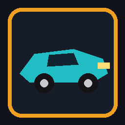

TussieCars
Arkade-kampbilløp i 3D. Seksten baner, nitro, missiler og katten Tussie ved startlinjen.
Nettleseren er enkeltspiller. Windows-filen er en installasjon for brukeren din, med snarvei på skrivebordet. Windows kan vise «Windows beskyttet PCen din» fordi filen ikke er signert. Velg Mer info og deretter Kjør likevel.
Kontroller
| Handling | Tastatur | Håndkontroll |
|---|---|---|
| Gass | W eller pil opp | Høyre avtrekker |
| Brems | S eller pil ned | Venstre avtrekker |
| Styr | A / D eller piltaster | Venstre stikke |
| Drift | Mellomrom | Trykk inn venstre stikke |
| Nitro | Shift | Y |
| Missil forover | C | RB |
| Mine | X | LB |
| Missil bakover | V | X |
| Pause | Esc | Start |
- Klikk i spillbildet hvis tastene ikke svarer med en gang.
- Drift i svingene fyller nitrotanken. Bruk den på langsiden.
- Autovernet tar HP. Reparer i garasjen mellom løpene.
VR
- Vanlig spilling i nettleseren trenger ikke hodesett.
- Har nettleseren WebXR, finnes knappen Play in VR i hovedmenyen. Uten hodesett fortsetter spillet på skjermen.
- PC VR: installer Windows-versjonen, start Quest Link eller SteamVR, og åpne TussieCars VR fra Start-menyen.